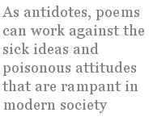

Although you don’t hear about it as frequently as in past decades, there is a belief held by some poets that poetry is therapeutic. In fact, a few people took the notion so seriously that they attempted to help the mentally disturbed or the terminally ill by running poetry workshops for them. The operative idea, one assumes, is that genuine self-expression is so fulfilling that it has a beneficial effect on someone who is ailing or in despair. Of course, for the therapy to work the poetry produced must be in free-verse style, and it must be “sincere,” and it must place “authenticity” and “feeling” above craft and fictive imposture. In this sense, poetry-as-therapy was just another one of the trendy frauds dreamt up in the 1960s and 1970s as a substitute for the making of real art. Like Tai Chi, Rolfing, Primal Scream, and Astral Meditation, it was the sort of pure hokum utterly characteristic of a bizarre time in our nation’s history.
Nevertheless, the issue is worth exploring. There is a sense in which poetry can be therapeutic, but to grasp it we have to look at some etymology.
In ancient Greek, therapeia meant the service or attendance provided by a non-slave. A theraps (the word is quite rare in Greek, and attested only in the accusative case) was either a friend, companion, or paid person who performed some kind of service for you. In time therapeia came to be associated with what a physician did for a patient, which is why our modern word therapy is largely confined to the treatment of disabilities or pathological conditions. For us, something is therapeutic if it helps to cure a disorder, or at least palliate some of the worst symptoms of that disorder.
What does it imply if you claim that poetry has a therapeutic function? Well, let’s consider the question logically. It has to mean that you believe the poet or his audience or both of them suffer from some kind of sickness. It also has to mean that you think the expression of a verbal formula (i.e. a poem) will magically cure or improve that sickness. In short, you believe that the poet is a witch doctor.
Now all sorts of po-biz dwarfs will jump up and scream that they believe no such thing. They will proclaim themselves to be progressive, up-to-date, enlightened beings, free from all obscurantist superstition. They will anxiously insist that they are good little liberals, totally devoted to a scientific worldview.
But if you say that poetry is therapeutic you are perforce saying that there is some sort of mantic element in poetry that works in complete opposition to the laws of science. The only way around this is to change the meaning of the word therapeutic, and broaden it so that it applies to utterly trivial things, as for example saying that a good cup of coffee is “therapeutic,” or a hot bubble-bath is “therapeutic.” In that case you’ve degraded the word to mean “relaxing” or “invigorating” — and if that’s what you intend when you say that poetry is therapeutic, you’ve really debased the great and ancient craft of poetry into a form of verbal aspirin.
But liberals don’t think very much, so I’m sure they never get this far in their ratiocination. Suffice it to say that if we grant a therapeutic function to poetry, we must admit that it has a magical ability to “cure” in some as yet inexplicable manner.
As a matter of fact, this is precisely what we discover the further back we go in the history of Indo-European poetics. As Calvert Watkins remarks in his essay on the poet as healer, “magical, carminative medicine was in Indo-European culture and society a manifestation of the power of the spoken word, of which the Indo-European poet was both the custodian and the professional.” Watkins has shown how thoroughly attested this belief is in ancient Greek, Sanskrit, and Old Irish texts.
It’s easy to misinterpret this idea, and claim that all it refers to is the satisfying catharsis experienced by a poet when he completes a fine poem, or by a reader when he reads such a poem with appreciation. This is what you might call the “feelgood” notion of poetry-as-therapy, and it’s particularly dear to the hearts of those overgrown flower-children who show up regularly at poetry festivals and slams. For such people poetry is just one more means of pumping up enthusiasm and allowing them to think “positive thoughts.”
The original idea, however, was much more serious than that. Our forefathers literally believed that well-crafted and precisely articulated poetry could cure physical illnesses or debilities. That is why the Latin word for poem, carmen, is also the word for a magical charm or incantation. In fact, our English word charm is a direct reflex of the Latin carmen, brought to us via Norman-French.
But how can we understand or apply such an idea today? Poets can’t put out a shingle advertising themselves as witch doctors. (Well, I take that back — some of the freakier types who attend the Dodge Poetry Festival or the St. Mark’s Open Readings are probably capable of anything.) When we speak of poetry-as-therapy today we shall have to define it in a more sophisticated manner. I have an idea that might bear fruit.
I suggest that poetry should be seen as therapeutic in the following metaphorical senses: poems can be thought of as antidotes to poison, or as reagents in a chemical solution. As antidotes, poems can work against the sick ideas and poisonous attitudes that are rampant in modern society, either by lampooning them or presenting an alternative perception of reality. As reagents, they can detect the presence of those sick ideas and attitudes, and identify them for targeting.
Now at first glance this suggestion seems to run up against a genre limitation. If we think of poems as antidotes or reagents, aren’t we restricting the craft to satire? Possibly — but I believe that the obstacle is not insuperable. Even a lyric or a love-sonnet or a paean could function as an antidote or reagent if it conceives of itself as oppositional or hostile to that which is sick. So one might write a love-sonnet that does not merely praise an individual woman’s beauty, but also consciously sets itself against the cult of ugliness that dominates modern aesthetics. In a similar manner, one could pen a lyric celebrating the natural world, while also pouring scorn on the soulless, profit-driven, anti-cultural march of “development” that is wrecking the planet.
These are just off-the-cuff suggestions, which may or may not pan out in the course of composition. The larger point is the poet’s perception of himself as a surgeon who directs his scalpel and lancet against the various tumors and cancers of modern life. If poets would imagine themselves as weavers of words, and of words as weapons, and of weapons as things to be wielded... well then, we could do a lot of salutary damage to the cultural pourriture of our times. That’s a program that sounds profoundly therapeutic.
Of course such a change would require a reorientation of our poetic self-perception. Instead of seeing ourselves as Smiley-Face panders to suburban pieties, or as mindless celebrants of mass cultural deracination, we would have to begin thinking of ourselves as diagnosticians and pathologists. And I very much doubt that many of us have the stomach for that task.
Joseph S. Salemi teaches in the Department of Classical Languages at Hunter College, C.U.N.Y. His poems, essays, translations, book reviews, and scholarly articles have appeared in over 100 print journals world-wide. He is an N.E.H. scholar, a winner of the Classical and Modern Literature Prize, and a four-time finalist for the Howard Nemerov Award. He has published three books of poetry, the latest being Masquerade (Pivot Press).